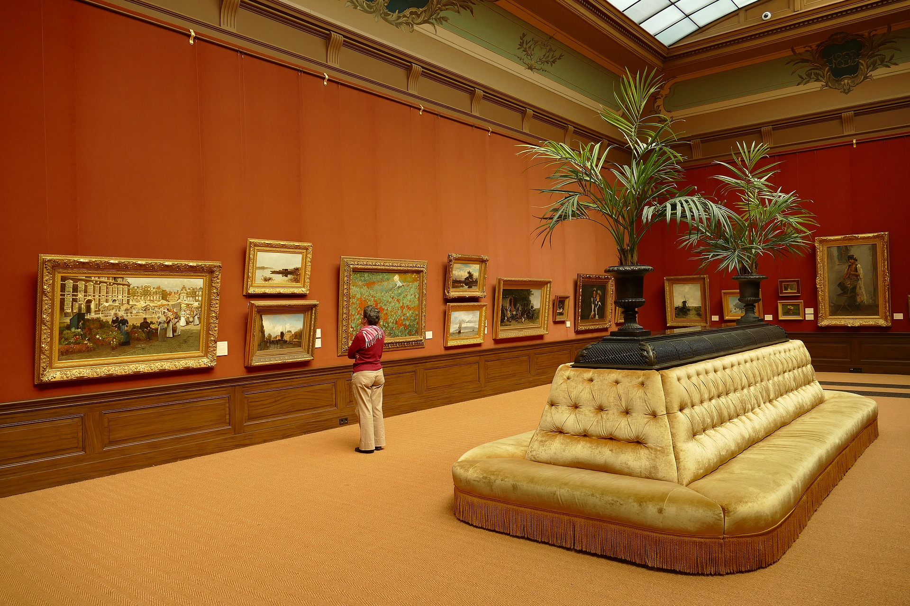
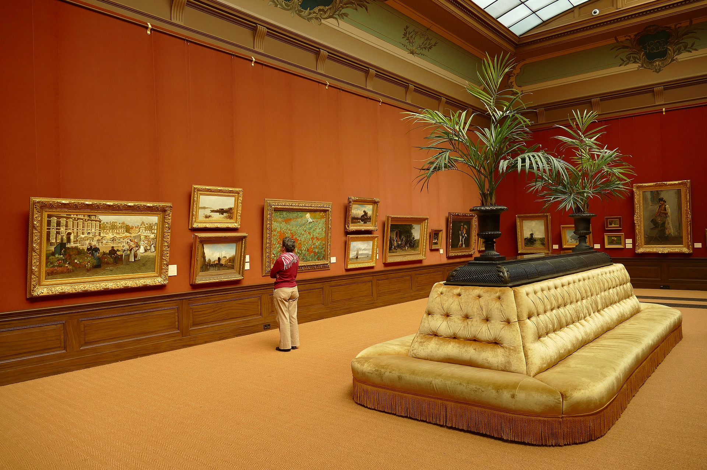

Over Haarlem
Haarlem, de hoofdstad van Noord-Holland, en speelde vroeger een grote rol in de handel via de rivier die door Haarlem loopt: het Spaarne. Als je langs het Spaarne loopt zie je ook dat Haarlem een rijke stad was (en nog steeds is). Daarnaast is er ook veel te doen, denk bijvoorbeeld aan het Teylers museum, de grote kerk, de grote markt, boottochten en vele winkels. Haarlem staat verder bekend om zijn oude binnenstad waar je zo een dag vol mee kan maken. Er zijn vaak evenementen op het grote marktplein, zoals Haarlem Culinair of het Halloween feest. Verder zijn er veel mogelijkheden voor werk in verschillende sectoren zoals onderwijs, IT, horeca, en nog vele andere branches. Door het Haarlem Station is het heel makkelijk om vanuit in Amsterdam of Schiphol te komen waardoor het goed toegankelijk is voor toeristen, maar ook voor mensen die buiten de stad wonen, wat maakt dat veel mensen een baan hebben in Haarlem of studeren in Haarlem.
 
